5.1 Singular Value Decomposition (SVD) – An Intuitive and Mathematical Approach
Singular Value Decomposition (SVD) is one of the most powerful matrix factorization tools in linear algebra, extensively used in areas like data compression, signal processing, machine learning, and more. SVD generalizes the concept of diagonalization to non-square matrices, decomposing any \(m \times n\) matrix \(A\) into three matrices with well-defined geometric interpretations.
5.2 The SVD Theorem
For any real or complex \(m \times n\) matrix \(A\), SVD states that:
\[
A = U \Sigma V^T
\]
Where: - \(U\) is an \(m \times m\) orthogonal matrix (or unitary in the complex case), - \(\Sigma\) is an \(m \times n\) diagonal matrix, with non-negative real numbers (the singular values of \(A\)) on the diagonal, - \(V^T\) is the transpose (or conjugate transpose in the complex case) of an \(n \times n\) orthogonal matrix \(V\).
These are range and null spaces for both the column and the row spaces.
The singular value decomposition provides an orthonormal basis for the four fundamental subspaces.
5.3 Intuition Behind SVD
The SVD can be understood geometrically: - The columns of \(V\) form an orthonormal basis of the input space. - The matrix \(\Sigma\) scales and transforms this space along the principal axes. - The columns of \(U\) form an orthonormal basis of the output space, representing how the transformed vectors in the input space map to the output space.
SVD essentially performs three steps on any vector \(x\): 1. Rotation: \(V^T\) aligns \(x\) with the principal axes.
Scaling: \(\Sigma\) scales along these axes.
Rotation: \(U\) maps the result back to the output space.
5.4 Spectral Decomposition vs. SVD
Spectral Decomposition (also known as Eigendecomposition) applies to square matrices and decomposes a matrix \(A\) into \(A = Q \Lambda Q^{-1}\), where \(Q\) is an orthogonal matrix of eigenvectors, and \(\Lambda\) is a diagonal matrix of eigenvalues.
SVD, on the other hand, applies to any matrix (square or rectangular) and generalizes this idea by using singular values (which are always non-negative) instead of eigenvalues.
5.4.1 Comparison:
Eigenvectors and Eigenvalues: Spectral decomposition only works if \(A\) is square and diagonalizable. It gives insight into the properties of a matrix (e.g., whether it is invertible).
Singular Vectors and Singular Values: SVD works for any matrix and provides a more general and stable decomposition, useful even for non-square matrices.
5.5 Steps to Find \(U\), \(\Sigma\), and \(V^T\)
Given a matrix \(A\), the SVD factors \(U\), \(\Sigma\), and \(V^T\) can be computed as follows:
Compute \(A^T A\) and find the eigenvalues and eigenvectors:
The matrix \(V\) is formed from the eigenvectors of \(A^T A\).
The singular values \(\sigma_i\) are the square roots of the eigenvalues of \(A^T A\).
Construct \(\Sigma\):
\(\Sigma\) is a diagonal matrix where the non-zero entries are the singular values \(\sigma_1, \sigma_2, \dots\), arranged in decreasing order.
Compute \(A A^T\) and find the eigenvectors:
The matrix \(U\) is formed from the eigenvectors of \(A A^T\).
Transpose \(V\):
The matrix \(V^T\) is simply the transpose of \(V\).
5.6 Example
Let’s consider a simple example where \(A\) is a \(2 \times 2\) matrix:
Given the Singular Value Decomposition (SVD) of a matrix \(A\), the matrix can be reconstructed as a linear combination of low-rank matrices using the left singular vectors \(u_i\), singular values \(\sigma_i\), and the right singular vectors \(v_i^T\).
The formula to reconstruct the matrix \(A\) is:
\[
A = \sum_{i=1}^{r} \sigma_i \, u_i \, v_i^T
\]
where: - \(r\) is the rank of the matrix \(A\) (i.e., the number of non-zero singular values), - \(\sigma_i\) is the \(i\)-th singular value from the diagonal matrix \(\Sigma\), - \(u_i\) is the \(i\)-th column of the matrix \(U\) (left singular vectors), - \(v_i^T\) is the transpose of the \(i\)-th row of the matrix \(V^T\) (right singular vectors).
5.7.1 Breakdown of Terms:
\(u_i \in \mathbb{R}^m\) is a column vector from the matrix \(U\) (size \(m \times 1\)),
\(v_i^T \in \mathbb{R}^n\) is a row vector from the matrix \(V^T\) (size \(1 \times n\)),
\(\sigma_i \in \mathbb{R}\) is a scalar representing the \(i\)-th singular value.
Each term \(\sigma_i u_i v_i^T\) represents a rank-1 matrix (the outer product of two vectors). The sum of these rank-1 matrices reconstructs the original matrix \(A\).
5.7.2 Example:
For a matrix \(A\), its SVD is represented as:
\[
A = U \Sigma V^T = \sum_{i=1}^{r} \sigma_i \, u_i \, v_i^T
\]
If the rank of \(A\) is 2, then the reconstructed form of \(A\) would be:
\[
A = \sigma_1 u_1 v_1^T + \sigma_2 u_2 v_2^T
\]
Each term \(\sigma_i u_i v_i^T\) corresponds to a low-rank approximation that contributes to the final matrix. By summing these terms, the full matrix \(A\) is obtained.
Python code demonstrating reconstruction is given below:
import numpy as np# Define the matrix A and convert it to float64A = np.array([[3, 1], [1, 3]], dtype=np.float64)# Perform SVDU, Sigma, VT = np.linalg.svd(A)# Reconstruct A using the singular values and singular vectorsA_reconstructed = np.zeros_like(A) # This will be float64 nowfor i inrange(len(Sigma)-1): A_reconstructed += Sigma[i] * np.outer(U[:, i], VT[i, :])print("Original matrix A:")print(A)print("\nReconstructed A from rank-1 matrices:")print(A_reconstructed)
Original matrix A:
[[3. 1.]
[1. 3.]]
Reconstructed A from rank-1 matrices:
[[2. 2.]
[2. 2.]]
5.8 Singular Value Decomposition in Image Processing
5.8.1 Image Compression
SVD is widely used for compressing images. By approximating an image with a lower rank matrix, significant amounts of data can be reduced without a substantial loss in quality. The largest singular values and their corresponding singular vectors are retained, allowing for effective storage and transmission.
5.8.2 Noise Reduction
SVD helps in denoising images by separating noise from the original image data. By reconstructing the image using only the most significant singular values and vectors, the impact of noise (often associated with smaller singular values) can be minimized, resulting in a clearer image.
5.8.3 Image Reconstruction
In applications where parts of an image are missing or corrupted, SVD can facilitate reconstruction. By analyzing the singular values and vectors, missing data can be inferred and filled in, preserving the structural integrity of the image.
5.8.4 Facial Recognition
SVD is employed in facial recognition systems as a means to extract features. By decomposing facial images into their constituent parts, SVD helps identify key features that distinguish different faces, enhancing recognition accuracy.
5.8.5 Image Segmentation
In image segmentation, SVD can aid in clustering pixels based on their attributes. By reducing dimensionality, it helps identify distinct regions in an image, facilitating the separation of objects and backgrounds.
5.8.6 Color Image Processing
SVD can be applied to color images by treating each color channel separately. This allows for efficient manipulation, compression, and analysis of color images, improving overall processing performance.
5.8.7 Pattern Recognition
SVD is utilized in pattern recognition tasks where it helps to identify and classify patterns within images. By simplifying the data representation, SVD enhances the efficiency and accuracy of recognition algorithms.
5.8.8 Example
from PIL import Imageimport urllib.requestimport matplotlib.pyplot as plturllib.request.urlretrieve('http://lenna.org/len_top.jpg',"input.jpg")img = Image.open("input.jpg")
# convert to grayscaleimggray = img.convert('LA')plt.figure(figsize=(8,6))plt.imshow(imggray);
# creating image histogramimport pandas as pdimport numpy as npimgmat = np.array(list(imggray.getdata(band=0)), float)A=pd.Series(imgmat)A.hist(bins=20)
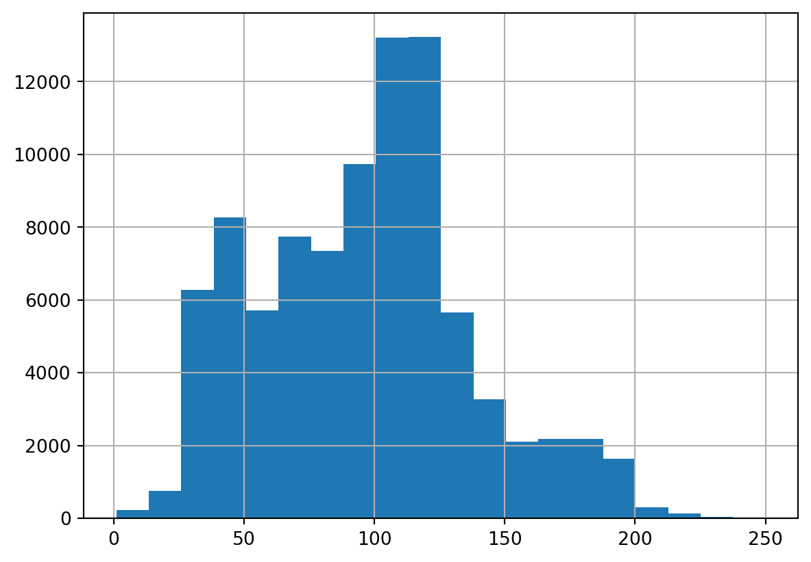
# printing the pixel valuesprint(imgmat)
[ 80. 80. 79. ... 100. 94. 99.]
# dimension of the gray scale image matriximgmat.shape
(90000,)
##loading an image and show it using matrices of pixel valuesfrom skimage import iof ="http://lenna.org/len_top.jpg"#url of the imagea = io.imread(f) # read the image to a tensorc1=a[:,:,0] # channel 1c2=a[:,:,1] # channel 2c3=a[:,:,2] # channel 3print(c1)# dimension of channel-1c1.shape
## an application of matrix additionplt.imshow(0.34*c1-0.2*c2-0.01*c3, cmap='gray', vmin =0, vmax =255,interpolation='none')plt.show()
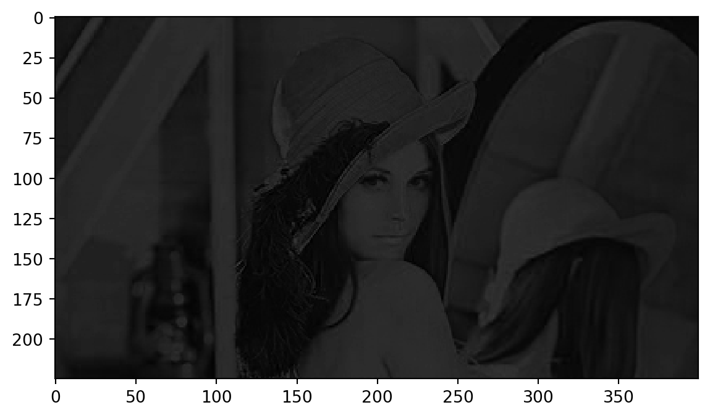
#converting a grayscale image to numpy arrayimgmat = np.array(list(imggray.getdata(band=0)), float)imgmat.shape = (imggray.size[1], imggray.size[0])imgmat = np.matrix(imgmat)plt.figure(figsize=(8,6))plt.imshow(imgmat, cmap='gray');
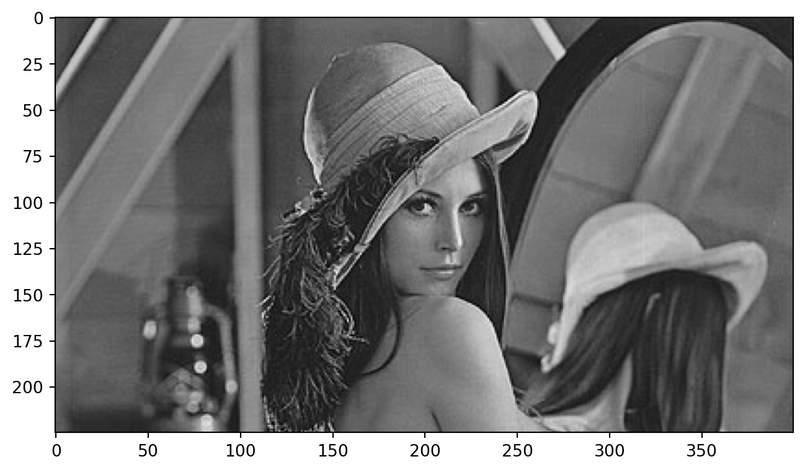
As promised, one line of command is enough to get the singular value decomposition. \(U\) and \(V\) are the left-hand side and the right-hand side matrices, respectively. ‘sigma’ is a vector containing the diagonal entries of the matrix \(\Sigma\) The other two lines reconstruct the matrix using the first singular value only. You can already guess the rough shape of the original image.
U, sigma, V = np.linalg.svd(imgmat)reconstimg = np.matrix(U[:, :1]) * np.diag(sigma[:1]) * np.matrix(V[:1, :])plt.imshow(reconstimg, cmap='gray');
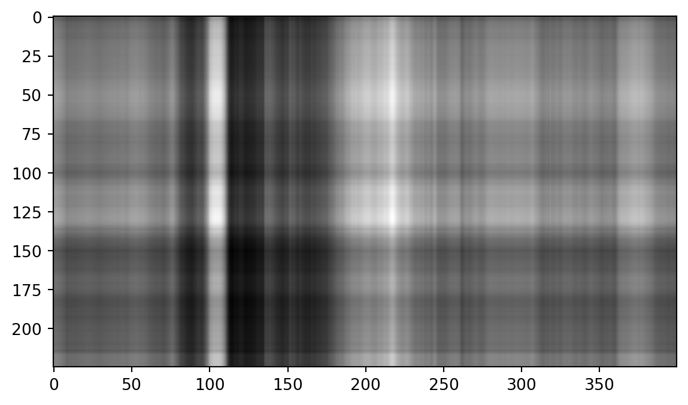
Let’s see what we get when we use the second, third and fourth singular value as well.
for i inrange(2, 4): reconstimg = np.matrix(U[:, :i]) * np.diag(sigma[:i]) * np.matrix(V[:i, :]) plt.imshow(reconstimg, cmap='gray') title ="n = %s"% i plt.title(title) plt.show()
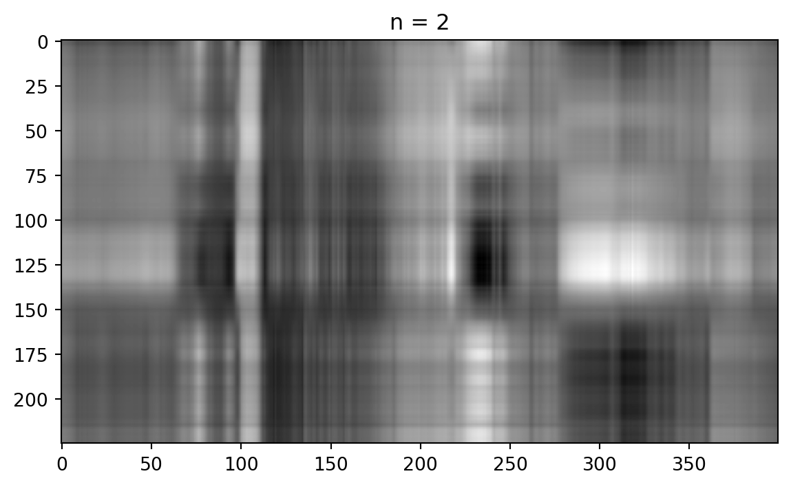
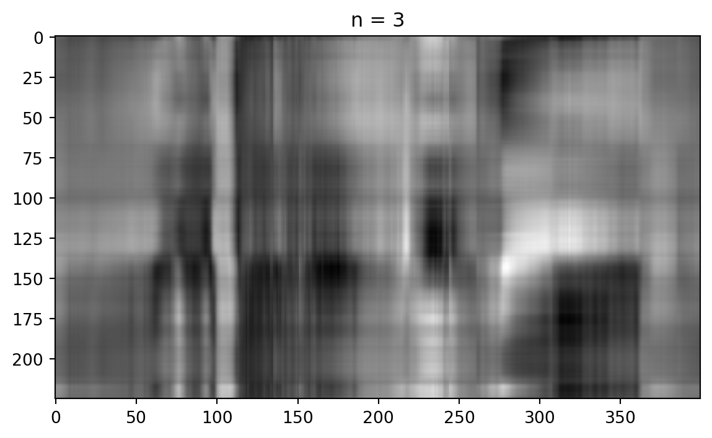
Now we let \(i\) run from 5 to 51, using a step width of 5. For \(i=50\), we already get a pretty good image!
for i inrange(5, 51, 5): reconstimg = np.matrix(U[:, :i]) * np.diag(sigma[:i]) * np.matrix(V[:i, :]) plt.imshow(reconstimg, cmap='gray') title ="n = %s"% i plt.title(title) plt.show()
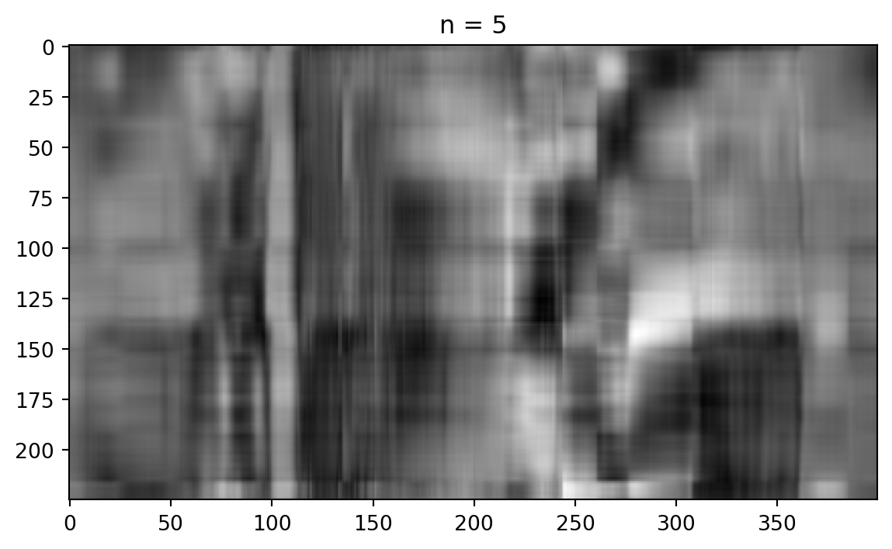
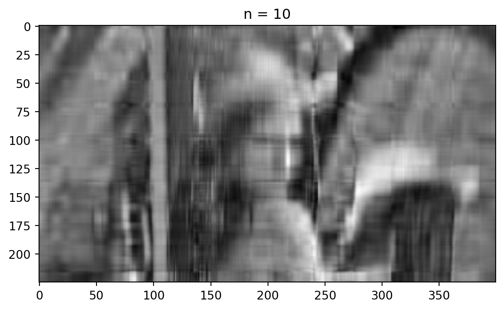
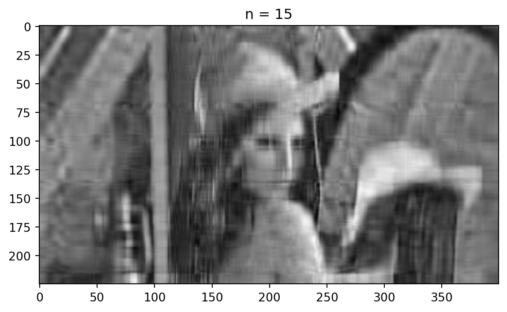
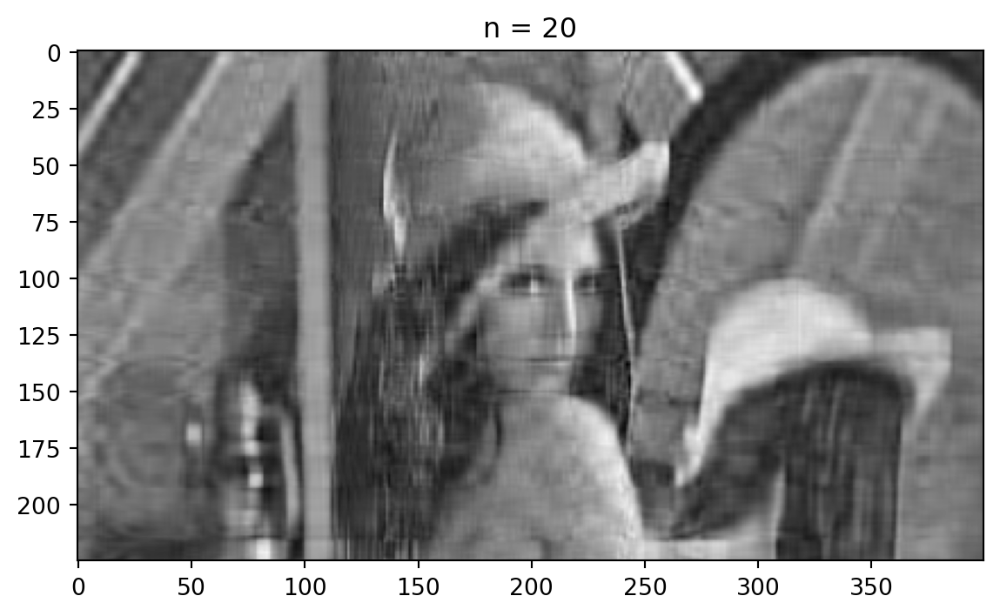
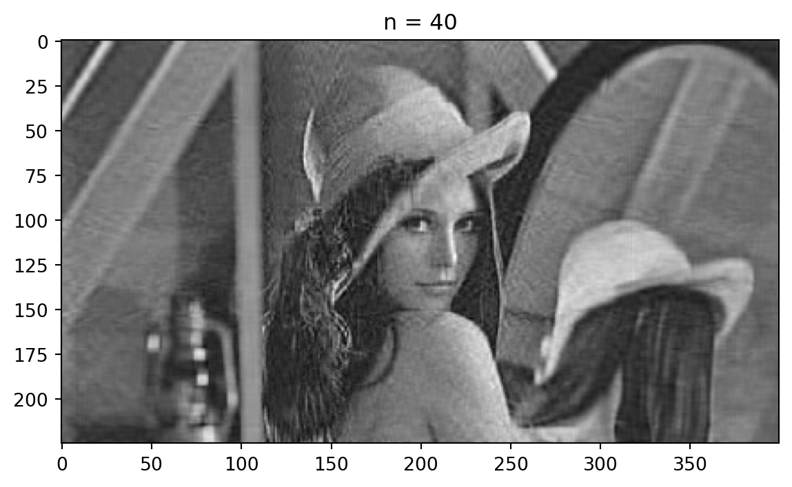
But how many singular values do we have after all? The following command gives us the number of entries in sigma. As it is the diagonal matrix, it is stored as a vector and we do not save the zero entries. We now output the number of singular values (the length of the vector sigma, containing the diagonal entries), as well as the size of the matrices \(U\) and \(V\).
print("We have %d singular values."% sigma.shape)print("U is of size", U.shape, ".")print("V is of size", V.shape, ".")print("The last, or smallest entry in sigma is", sigma[224])
We have 225 singular values.
U is of size (225, 225) .
V is of size (400, 400) .
The last, or smallest entry in sigma is 9.637679189276597
As Python stores the whole singular value decomposition, we do not really save space. But as you saw in the first theoretical exercise of the 10th series, we do not have to compute the whole matrices \(U\) and \(V\) if we know that we only want to reconstruct the rank \(k\) approximation. How many numbers do you have to store for the initial matrix of the picture? How many numbers do you have to store if you want to reconstruct the rank \(k\) approximation only?
Use the following Cell to find an \(i\) large enough that you are satisfied with the quality of the image. Check, how much percent of the initial size you have to store. If your picture has a different resolution, you will have to correct the terms.
i =10reconstimg = np.matrix(U[:, :i]) * np.diag(sigma[:i]) * np.matrix(V[:i, :])plt.imshow(reconstimg, cmap='gray')title ="n = %s"% iplt.title(title)plt.show()numbers =400*i + i +225* iprint("For this quality, we have to store %d numbers."% numbers)
For this quality, we have to store 6260 numbers.
If you really want to have a good quality, say you want to reconstruct using \(r - 1\) singular values, where \(r\) is the total number of singular values, is it still a good idea to use the singular value decomposition?
Singular Value Decomposition provides a general framework for decomposing any matrix into orthogonal components, revealing the underlying structure of the matrix. SVD has numerous applications in machine learning, signal processing, and more. The method to find the matrices \(U\), \(\Sigma\), and \(V^T\) involves using the eigenvalues and eigenvectors of \(A^T A\) and \(A A^T\).